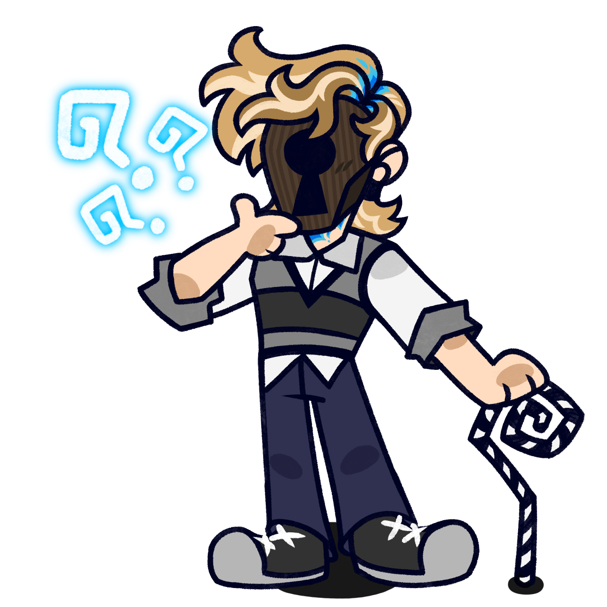

The Walter Automatons
(not programmed to bite!)
(in my personal headcanon creation order) (i am not choosing favorites)

WR_001:
rabbit

WR_002:
the spine

WR_003:
hatchworth

WR_004:
upgrade

WR_005:
the jon

WR_006:
zer0

WR_007:
toast
artwork by robin! used with permission.
The Live-Action Humans
pretend there are pictures of the walter workers here.
astrud camille chelsea davey gabi lacey. maybe a "glossary" page of all the former ww's
alphabetical order for now

astrud
camille
chelsea
davey
gabi
lacey
artwork by robin! used with permission.
Other Characters
yay all the walters and the beciles!!!!!
Featured Character of the Week!
(once-weekly rotating character with links to pages et al! for example...)

art by skullostarz! used with permission.
Peter VI is the current head of Walter Robotics and the Walter Automatons' primary caretaker! He had a blue matter accident which left his faced "smeared like butter", and he now wears a keyhole mask.
Peter is featured in the songs WINK the Satellite (We can get Peter A. Walter the 6th / to turn you into a rocket ship!") and Only Human was written by the robots about him, as is seen on the album art.
Character Fun Fact!
Peter is the sixth of his name; thus, many fans call him "Six". However, Rabbit calls him "Petes". The Spine still just calls him "Peter", because he's no fun.
and yknow more would go here but this is just a mockup